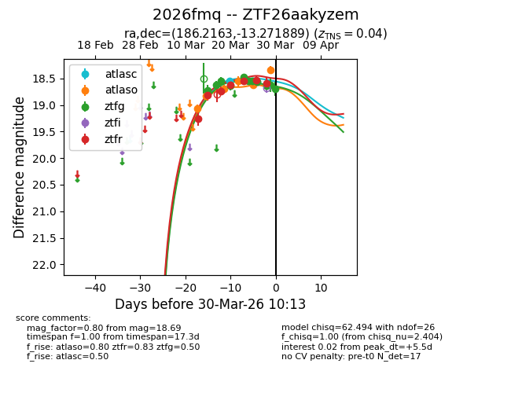
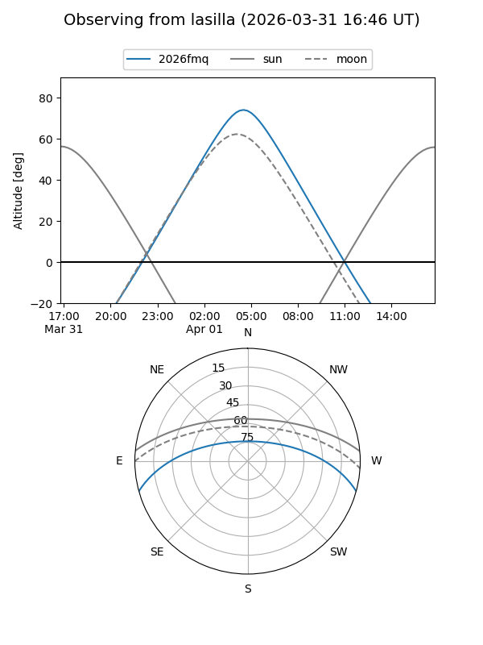
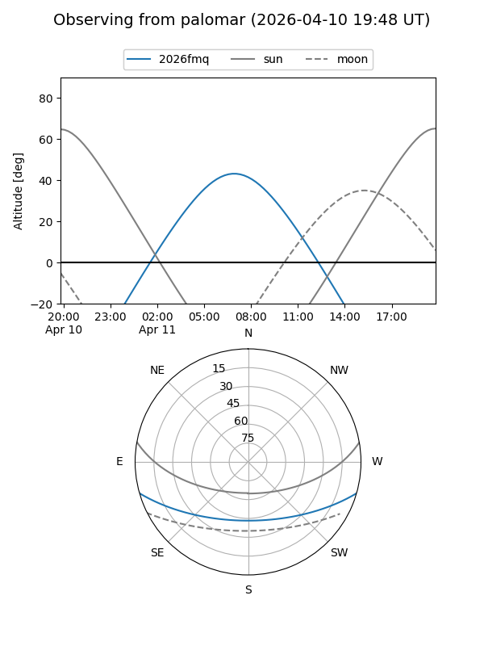
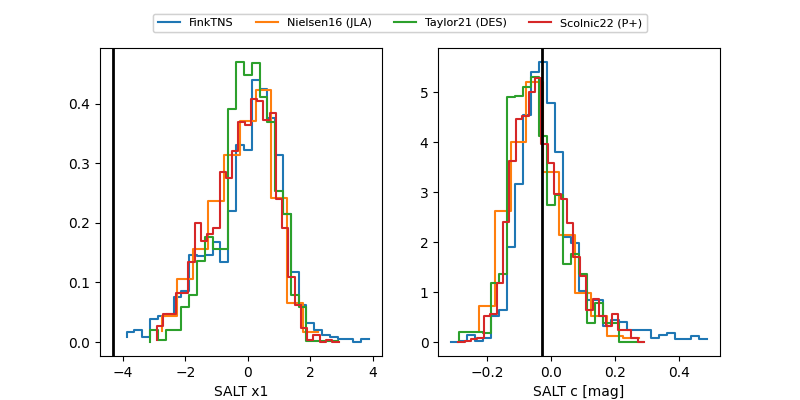

2026fmq
Target 2026fmq at 2026-03-30 10:16
Aliases and brokers:
FINK: link
Lasair: link
ALeRCE: link
TNS: link
YSE: link
alt names
ZTF26aakyzem (ztf,fink_ztf)
2026fmq (tns,yse)
Coordinates:
equatorial (ra, dec) = 186.2163,-13.27189
equatorial (HMS+DMS) = 12:24:51.92,-13:16:18.80
galactic (l, b) = (293.0319,+49.08840)
Flags:
Photometry:
last atlasc=18.56, atlaso=18.34, ztfg=18.69, ztfr=18.59
3 atlasc, 6 atlaso, 11 ztfg, 7 ztfr detections
Lightcurve

Visibility


Additional plots
